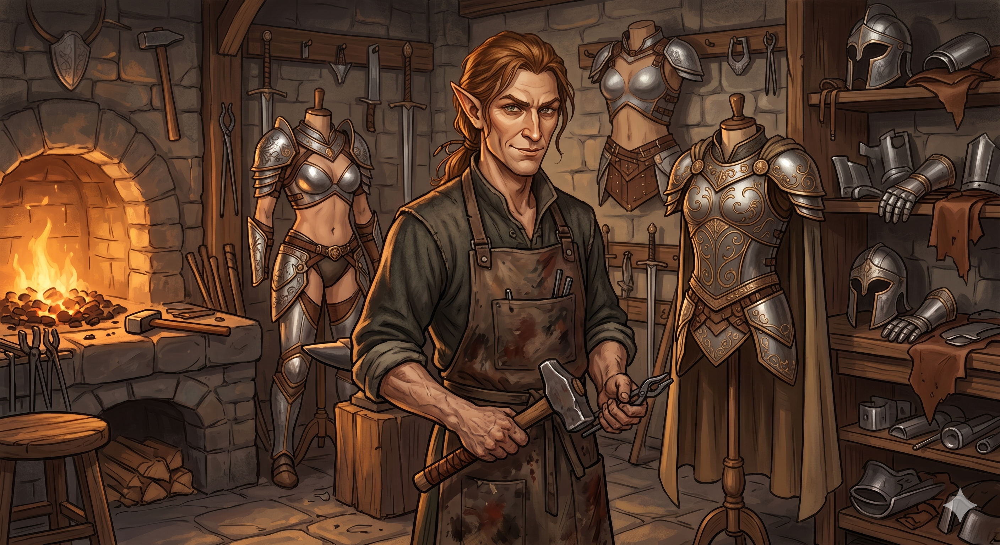

Appears in: Couch Potato Chaos
Profile

- Appears in: Couch Potato Chaos
- Aliases: Ramon
- Race: Elf (presumed high elf)
- Personality: Ramon is an elven craftsman-merchant with a distinctive design philosophy: armor should be both durable and sexy. His commitment to minimal-coverage armor design suggests either an eye for aesthetics, a shrewd understanding of his adventurer clientele’s preferences, or both. He operates out of Bray, a small village on the road to Brightwind, positioning himself to catch adventurers traveling toward the capital — a commercially sensible location choice. His domestic life with a beautiful but lazy dark-elven wife introduces a cross-racial marriage that is relatively uncommon in the series’ explored regions, where dark elves are more frequently associated with Zhakara and its antagonistic political sphere. His tolerance for his wife’s laziness — noted directly enough to be a defining character detail — suggests a good-natured acceptance of domestic imperfection.
- Backstory: Little is known of Ramon beyond his profession and domestic arrangement. He is the elven proprietor of the armor shop in Bray, the village that serves as a rest stop between the [Temple of the Player](./location-temple-of-the-player.html) region and [Brightwind City](./location-brightwind-city.html). His expertise in crafting armor that balances protection with visual appeal has made his shop a notable stop for adventurers passing through. His marriage to a dark-elven woman is notable given the racial politics of Etheria — dark elves are primarily associated with Zhakara and the antagonistic forces of the series, suggesting that Ramon’s wife may be a defector, exile, or simply someone who found love outside the expected racial boundaries. That she is described as “lazy” suggests she does not work in the shop with him, leaving the business entirely in Ramon’s hands.
- Significant story events:
- Pre-party arrival (Chaos): Ramon’s armor shop in Bray serves as a stop for adventurers traveling toward Brightwind. The party encounters him during their journey, where his distinctive minimal-coverage armor designs are available for purchase.
- Notable Quotes:
[No direct quotes from Ramon are recorded in the wiki. His most distinctive contribution is his design philosophy — armor that is both durable and sexy — which defines his commercial identity. Any dialogue would need to be sourced from the relevant chapters of Couch Potato Chaos.]
- Relationships:
- Ramon’s dark-elven wife: Lives with him but is described as beautiful but lazy, suggesting a domestic arrangement where Ramon runs the business alone. Their cross-racial marriage (high elf and dark elf) is unusual in the explored regions of Etheria.
- Tasha’s party: Customers. The party passes through Bray and visits his shop during their journey toward Brightwind.
- References: Couch Potato Chaos: Characters